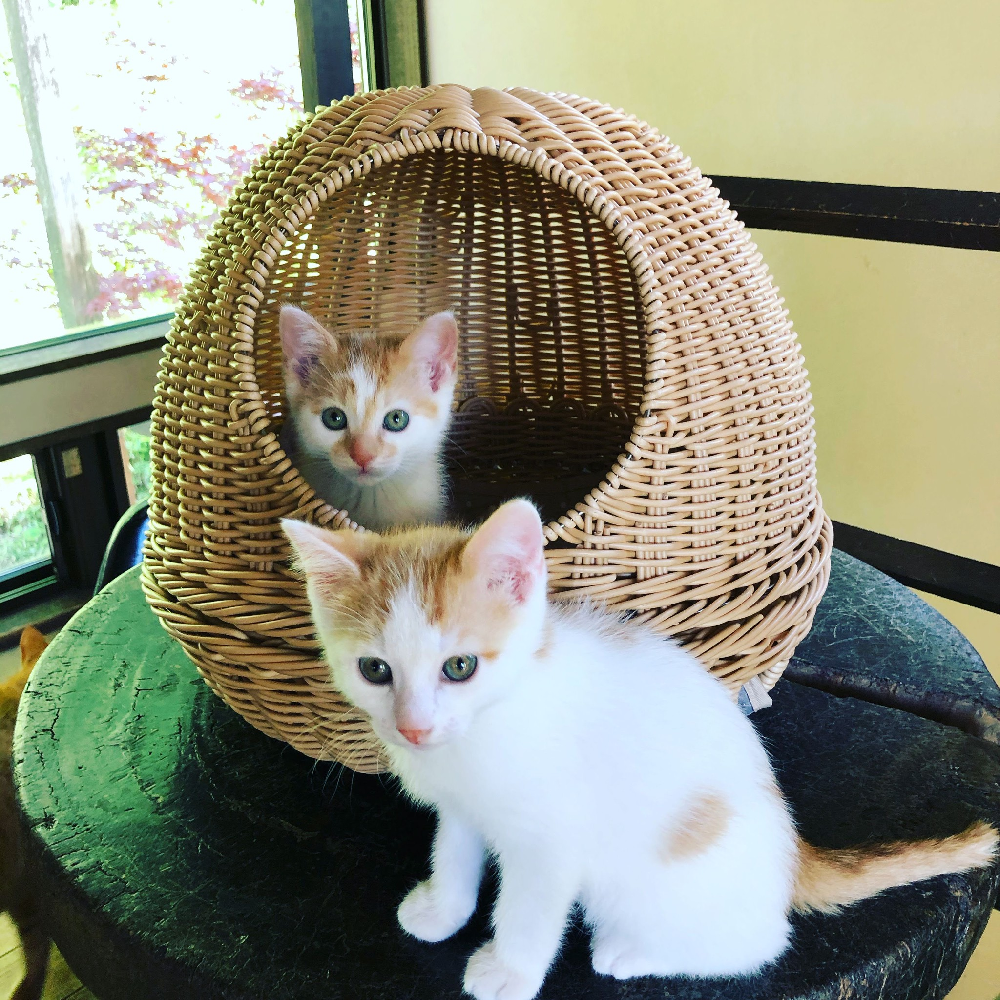

まずはご連絡ください
生後3か月未満の子猫を保護され、ねこの間に預けたいとお考えの場合は、電話またはメールでご連絡ください。保護猫枠に空きがあるかを確認し、お返事します。ねこの間の保護猫枠は常時10匹前後です。
Rescue Policy
命を預かる相談だからこそ、状況を伺いながら慎重に判断します。
鎌倉ねこの間では、原則的に獣医師ルートより保護猫をお預かりしています。一方で、最近では「子猫を保護したので、ねこの間で受け入れてもらえますか？」というお問い合わせも増えてきました。
一般の方から猫をお預かりする場合は、保護猫たちが安心して過ごせる環境を守るため、事前の確認と医療ケアをお願いしています。受け入れ頭数や時期には限りがあるため、すべてのご相談にお応えできるとは限りません。

Consultation Flow
生後3か月未満の子猫を保護され、ねこの間に預けたいとお考えの場合は、電話またはメールでご連絡ください。保護猫枠に空きがあるかを確認し、お返事します。ねこの間の保護猫枠は常時10匹前後です。
受け入れ前に、動物病院で健康状態の確認と必要な処置をお願いします。検査や処置にかかる費用は、保護された方にご負担をお願いしています。ただし検査結果で陽性が出た場合、その猫をどうするかを必ずご検討ください。
動物病院で各種証明書とともに猫をお預かりします。ご相談のうえ、保護主さまに連れてきていただくか、こちらから引き取りに伺います。受け入れ後の医療処置（ワクチン、去勢・避妊手術等）は、ねこの間で責任をもって行い、その子に合った里親様を探していきます。
猫の状態をよく診ていただき、ノミダニ駆除、回虫駆除、エイズ・白血病検査、月齢によっては猫コロナウイルス検査をお願いいたします。エイズ・白血病が陰性であることをはじめ、皮膚病の所見がないかなどの確認をお願いします。
※猫コロナウイルス検査については詳細をお伝えしますので、お電話でお問い合わせください。
糞便検査で回虫やコクシジウムなどの寄生虫や卵が確認された場合、1回目の駆虫薬を投与し、2週間後に2回目の駆虫薬を投与してからのお預かりとなります。ケースによっては、1回目の駆虫薬投与後にお預かりする場合もあります。お預かりの時期についてはご相談ください。
保護猫カフェ「鎌倉ねこの間」では常時10匹前後の保護猫たちと共同生活をすることになるため、上記検査で陽性反応が出た場合は、大変申し訳ございませんがお預かりできません。
また、原則的に順応性のある生後3か月未満の子猫のみ受け入れております。詳細はお問い合わせください。